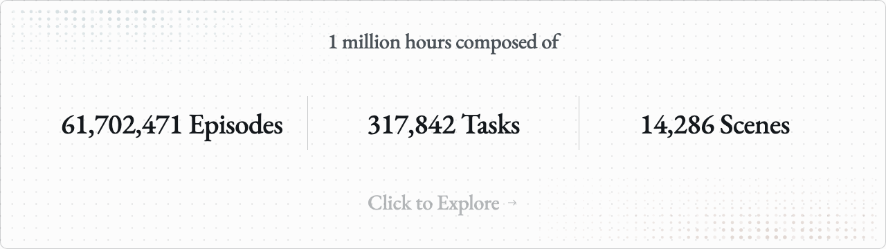
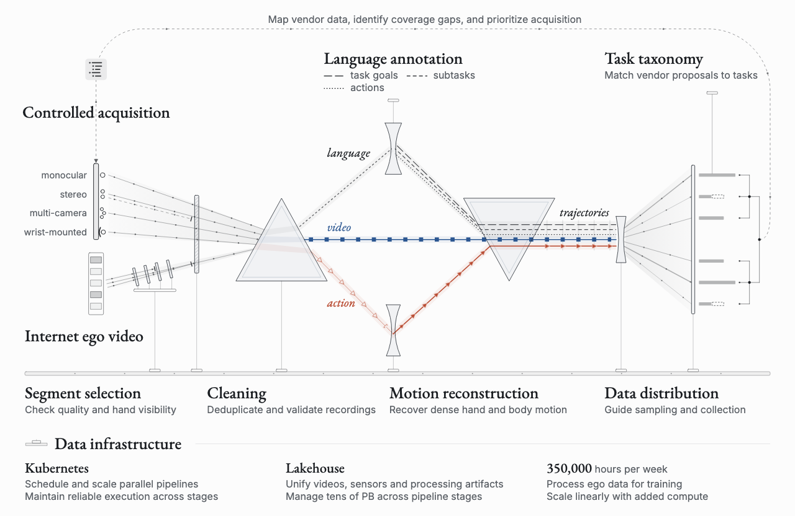
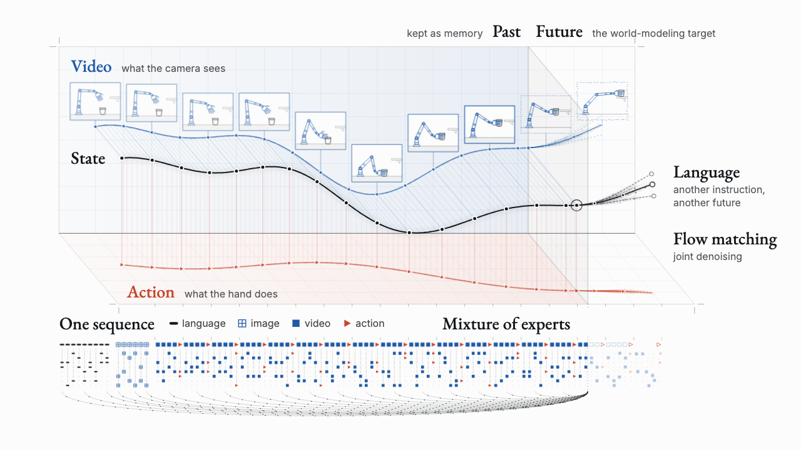
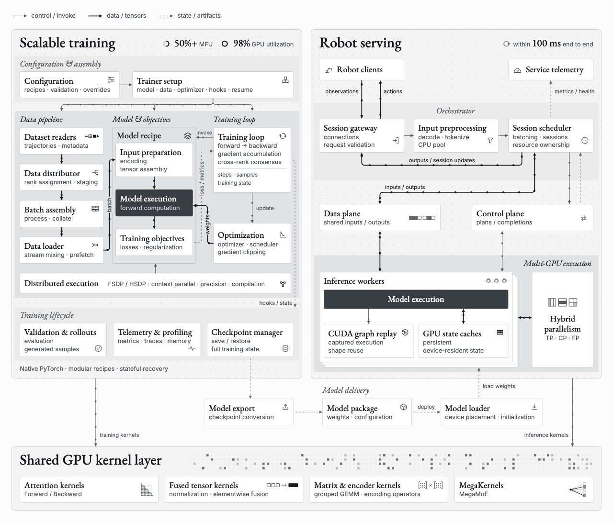
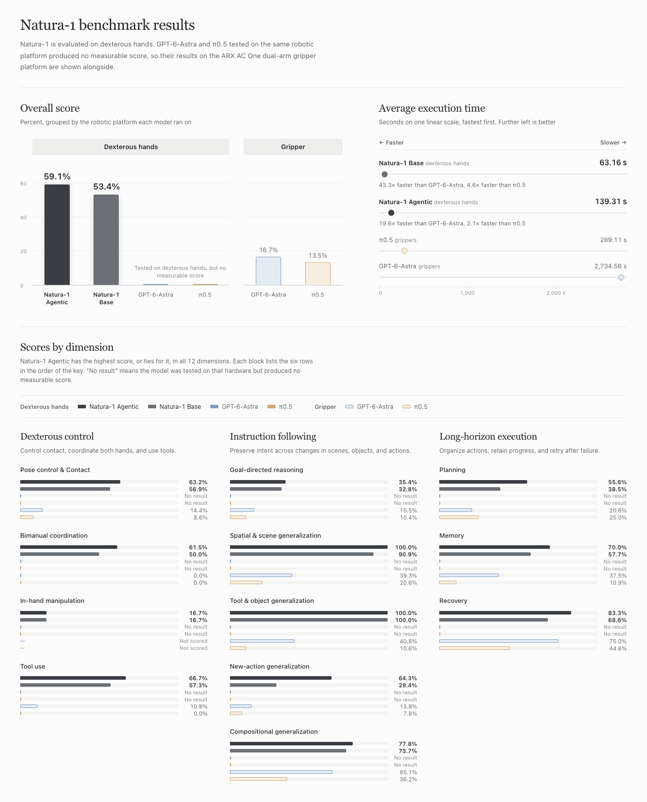
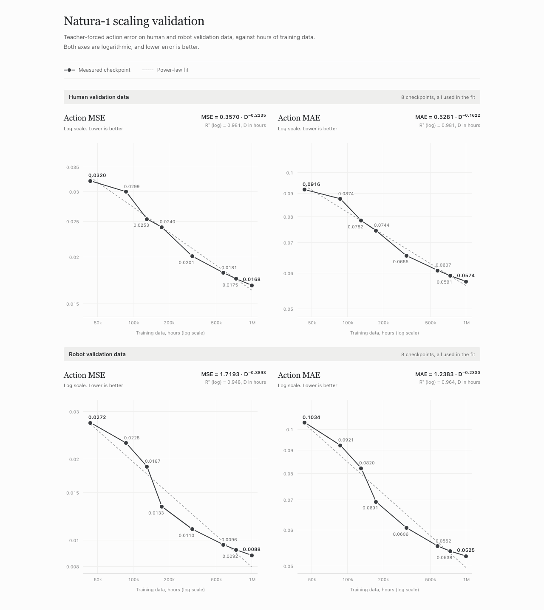

模型
50B MoE；语言、图像、视频、动作统一序列；未来视频与动作联合flow。
关键不只是50B模型，而是把人类视频整理成语言—视频—动作的连续经验，再用统一序列和系统级推理把它接到灵巧手。公开证据更充分地支持数据与系统路线，还不足以复现精确训练配方或证明完全零样本长程控制。
把一个人收拾桌面的第一视角视频给机器人，缺的并非只有一句“把杯子放好”：还缺手何时接触、如何绕开障碍、双手怎样协作、失败后如何调整。Natura-1希望把大量人类经验里的这些连续关系学进同一个模型，再迁移到灵巧机器人。它属于世界—动作模型与数据系统，不是像FLORA那样只输出标签，也不是人体动作重定向控制器。
官方叙事有三个相互依赖的部分：能规模化整理的人类数据；统一序列建模；能在机器人时延限制内运行的基础设施。下面按“数据从哪里来→训练在学什么→部署执行什么→证据能支持到哪里”拆开。


| 量 | 公开值 | 能否当训练配比？ |
|---|---|---|
| 人类训练经验 | 1,000,000小时 | 库存；不知道每类被抽到几次 |
| 处理吞吐 | 350,000小时/周 | 处理能力，不是新增采集量或每周训练量 |
| 机器人后训练 | limited robot data；未报小时 | 不能反推出human:robot比例 |
| 模态/任务分布 | 有taxonomy与分布反馈 | 未公开完整sampler权重与loss权重 |

官方将语言、图像、视频和动作放入自回归序列，使用标准MoE主干与模态相关的布局、attention设计；未来视频与动作采用联合flow matching，并分别承担预测目标。过去视频保留作记忆。这里的“自回归”描述序列组织，“flow”描述连续模态的生成，二者并不矛盾：外层可以逐块推进时间，块内用多步去噪。
已公开：共享序列、过去memory、联合video/action flow。尚未公开：逐层attention mask、future/action是否完全双向、部署究竟每轮生成多少视频token、积分步数、动作chunk长度、状态维数。此处没有伪造一个作者未给出的条件概率公式。
因此不能把Natura-1直接归入“OneWM未来只用于训练”或“InternW0-Δ移除未来分支”。也不能因为名字叫Agentic就假定与AW-0一样联合生成Python代码：官方目前只给Base/Agentic结果，没有足够的代码流、工具调用和训练细节。

灵巧操作要求在物体滑动或抓握变化后及时更新动作。官方报告20-DoF手和从观测到动作100ms以内的服务链。100ms对应约10次/秒的更新时间尺度，不是100Hz；也不等于底层伺服频率。多GPU、缓存、调度与kernel优化共同决定这一数字。
文中还报告attention超过1,200 TFLOP/s、相对FlexAttention约6×，整体训练1.7×、推理2×等系统结果。不同层级加速不可相乘，更不能把单kernel吞吐当整模型时延。缺少完整硬件、batch、输入长度与时延分位数时，这些应读作作者所测配置的工程报告。

| Benchmark | 公开结果 | 结论边界 |
|---|---|---|
| LIBERO / RoboTwin / RoboDojo | 本官方长文未报告对应标准仿真协议的结果 | 不能与OneWM、InternW0-Δ、UniWAM的仿真成功率直接排榜 |
| 维度 | Base | Agentic | 读法 |
|---|---|---|---|
| 姿态与接触 | 56.9 | 63.2 | 不等同接触力误差测量 |
| 双手协作 | 50.0 | 61.5 | 本体直接影响能力 |
| 手内操作 | 16.7 | 16.7 | 显著短板；Agentic无提升 |
| 工具使用 | 57.3 | 66.7 | 工具规划与实际操作耦合 |
| 目标推理 | 32.8 | 35.4 | 远未解决所有开放指令 |
| 空间与场景 | 90.9 | 100 | 样本量未报，不能作普遍100% |
| 工具与物体泛化 | 100 | 100 | 仅针对所测分布 |
| 新动作 | 29.4 | 64.3 | 增益最大之一；Agentic实现尚不透明 |
| 组合泛化 | 73.7 | 77.8 | 不能单独证明上下文参数适应 |
| 规划 | 38.5 | 55.6 | 应同时观察执行耗时 |
| 记忆 | 57.7 | 70.0 | 未提供独立上下文长度消融 |
| 恢复 | 68.6 | 83.3 | 未提供在线学习/梯度更新证据 |
| 实验 | 条件与结果 | 不能混淆的量 |
|---|---|---|
| Base vs Agentic | 相同ROKAE AR5＋Wuji；总分53.4 / 59.1；平均执行63.16 / 139.31秒 | +5.7pp综合分，约2.21倍执行时长；不是模型推理延迟比 |
| 外部基线 | Astra/π0.5在ARX AC One夹爪为16.7 / 13.5；执行2734.56 / 289.11秒 | 换本体、任务可执行性与timeout混入差异；不是严格同硬件消融 |
| 泛化设置 | 官方称后训练未见任务、场景、对象、动作组合；展示最近训练样例 | 近邻检索不是完整预训练去污染证明；未报N与CI |
| 六个长程演示 | 包馄饨1:12、装盒2:21、泡茶1:42、书法0:50、贴膜3:01、酸奶2:20；单次连贯演示 | 带†：额外task-specific tuning；无总尝试数，不能换算SR |
官方还展示开放语言修改、临时工具和失败恢复。这些说明模型在所示轨迹里能响应意图与环境，但视频选择无法替代系统实验：需要未剪辑试验全集、失败率、成功标准和是否人工复位，才能判断长程鲁棒性。

Human：MSE(D)=0.3570·D−0.2235；MAE(D)=0.5281·D−0.1622
Robot：MSE(D)=1.7193·D−0.3893；MAE(D)=1.2383·D−0.2330
图上从约44K小时到1M小时，Human MSE 0.0320→0.0168、MAE0.0916→0.0574；Robot MSE0.0272→0.0088、MAE0.1034→0.0525。正文按未四舍五入值报告下降47.7%/37.3%与67.7%/49.3%，由图上圆整数重新算会略有不同。
Teacher forcing：预测下一步时给正确历史观测/上下文；机器人自主执行则会走到自己产生的、有误差的新状态。前者测分布内动作拟合与跨域表征，后者还包括误差累积、接触、观测漂移和恢复。因此“人类经验有助于机器人动作预测”有证据，“百万小时已经解决零样本闭环”没有从这组图得到证明。
我的解读：它把人类经验当成带时间、语言意图和运动的连续序列，而不只是一批视觉预训练图片；再把训练吞吐与机器人实时服务一起设计。这是“数据结构＋模型＋系统”的协同路线。当前最有说服力的迁移证据是机器人teacher-forced误差随人类数据量下降，最薄弱的是闭环样本量与Agentic机制公开程度。
来源导航：官方长文与交互图。本页是发布材料的证据化精读，不冒充尚未公开的算法论文全文；缺失的loss、mask、附录和代码路径明确留空。